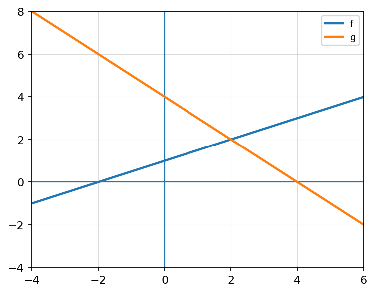
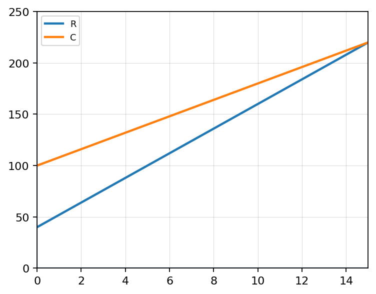

Evaluate exactly: \[\cos\left(\frac{\pi}{4}-\frac{\pi}{6}\right)\]
Use sum/difference identities to evaluate \(\sin\left(\frac{5\pi}{12}\right)\).
A student simplifies \(\sin^2(x)+\cos^2(x)\) as \((\sin(x)+\cos(x))^2\).
Create a trigonometric identity that simplifies to \(1\). Your identity must use at least two of the following: reciprocal identities, quotient identities, or Pythagorean identities. Then verify it line by line and explain why each rewrite is valid.
Let \( f(x)=3x-2 \) and \( g(x)=x+5 \).
Let \( f(x)=x^2 \) and \( g(x)=2x \).
Use the table.
| \(x\) | \(-1\) | \(0\) | \(2\) |
|---|---|---|---|
| \(f(x)\) | \(3\) | \(1\) | \(5\) |
| \(g(x)\) | \(2\) | \(-4\) | \(1\) |
State the domain restriction for:
\(\frac{x+1}{x-7}\)
Given:
\(f(x)=\sqrt{x+4}\qquad g(x)=\frac{1}{x-2}\)
Determine the domain of:
Explain your reasoning.
Given:
\(f(x)=x^2-9\qquad g(x)=x-3\)
Explain the difference between simplifying a quotient of functions and changing the function itself.
Use \(\frac{x^2-1}{x-1}\) as your example. Mention excluded values, holes, or domain restrictions.
A student argues that function arithmetic is “just combining equations,” so domain does not need to be checked separately.
Solve: \[\sqrt{2x+1}=5\]
Solve and identify any extraneous solution: \[\sqrt{x+1}=x-1\]
Solve \(\sqrt{x+6}=x\). Then explain why one solution works and the other does not.
Create a square root equation that has exactly one valid solution and one extraneous solution after squaring.
Let \(f(x)=2x+3\) and \(g(x)=x^2-4\).
The graphs of \(f\) and \(g\) are shown.

Let \(f(x)=x^2-1\) and \(g(x)=2x+5\).
Use the table to compare function operations.
| \(x\) | \(-1\) | \(0\) | \(1\) | \(2\) |
|---|---|---|---|---|
| \(f(x)\) | \(4\) | \(3\) | \(0\) | \(-2\) |
| \(g(x)\) | \(2\) | \(-1\) | \(5\) | \(0\) |
A student simplified \(\frac{x^2-9}{x-3}\) to \(x+3\) and said the domain is all real numbers.
A fundraiser has revenue \(R(x)=12x+40\) and cost \(C(x)=8x+100\), where \(x\) is the number of items sold.

Explain the difference between simplifying a quotient of functions and changing the function itself.
Use \(\frac{x^2-1}{x-1}\) as your example. Mention excluded values, holes, or domain restrictions.
Create two functions \(f\) and \(g\) so that:
Explain why your choices satisfy all three conditions.